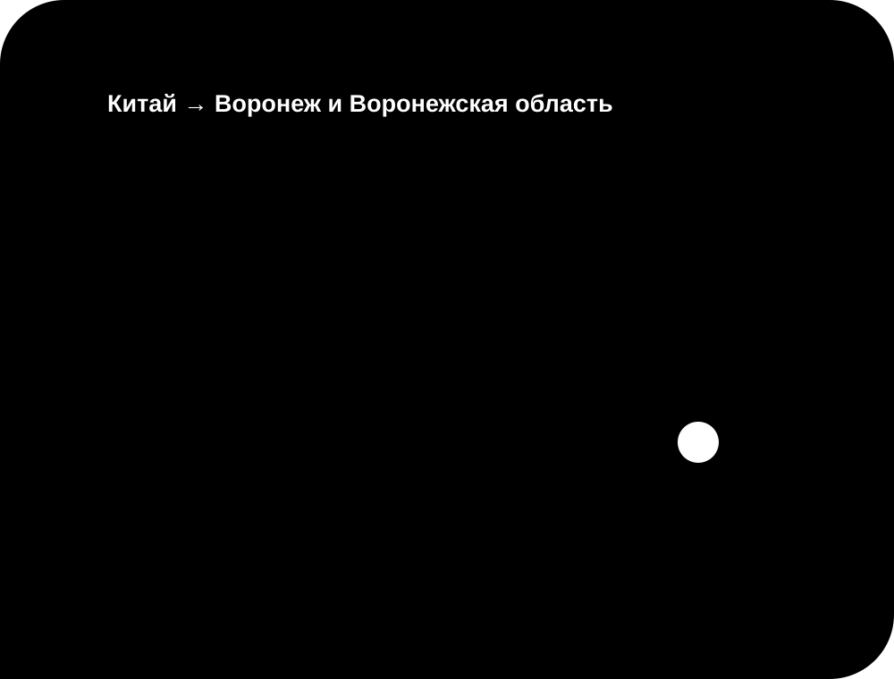

Заказать с Pinduoduo
Пришлите ссылку или снимок товара. Я уточню возможность выкупа, цену и условия доставки с Pinduoduo в Россию.
Совместная закупка · Воронеж и Воронежская область · вся Россия
Объединяем покупки в одну общую закупку: вы выбираете товар, а я помогаю найти выгодное предложение, рассчитать итоговую стоимость, выполнить выкуп и организовать доставку. Чтобы заказать из Китая, отправьте ссылку или фотографию товара в Telegram либо ВК.

Площадки Китая
Китайские маркетплейсы предлагают большой выбор, но оформление, оплата и доставка в Россию могут требовать помощи. В совместной покупке я выступаю организатором: помогаю с заказом, выкупом и доставкой из Китая.
Для заказа с Pinduoduo, 1688, Poizon, Taobao или другой доступной площадки отправьте найденное предложение. Возможность выкупа и условия уточняются до добавления товара в закупку.
Популярные китайские площадки
У каждой площадки свои правила, продавцы и способы оплаты. Перед выкупом я проверяю возможность заказа по вашей ссылке и сообщаю условия. Если прямой доставки в Россию нет, товар можно включить в совместную закупку.
Пришлите ссылку или снимок товара. Я уточню возможность выкупа, цену и условия доставки с Pinduoduo в Россию.
Помогу рассчитать выкуп товара с 1688 и добавить его в общий заказ после согласования стоимости.
Проверим выбранное предложение и рассчитаем заказ с Poizon вместе с доставкой до вашего города.
Отправьте найденный товар, чтобы узнать условия выкупа с Taobao и ориентировочный срок доставки.
Полезно перед заказом
Не стоит ориентироваться только на самую низкую цифру в карточке. Проверьте выбранную модификацию, количество, рейтинг продавца, доступные фотографии и условия предложения. Цена может относиться к другому размеру или минимальной партии. Перед оплатой я уточняю данные по присланной ссылке, чтобы расчёт соответствовал нужному варианту.
Покупаем вместе
Сначала уточняются характеристики и количество, затем рассчитываются расходы. Только после вашего согласия позиция включается в общий заказ, выкупается и направляется в Россию.
Пришлите ссылку, фотографию или описание того, что хотите заказать из Китая.
Проверяю предложение и индивидуально рассчитываю стоимость выкупа и доставки.
После согласования товар добавляется в совместный заказ и выполняется выкуп.
Заказ прибывает в Воронеж и Воронежская область или отправляется в другой регион России.
Проверяем выгоду до заказа
Перед совместной покупкой можно сравнить итоговую стоимость товара из Китая с предложениями на Ozon и Wildberries. Для честного сравнения учитываются цена товара, количество, характеристики, комиссия и доставка.
Если товар из Китая действительно дешевле, вы увидите разницу до выкупа. Если выгоды нет, мы не будем показывать вымышленную экономию.
Ответы перед заказом
Это зависит от продавца, минимального количества и выбранной позиции. Отправьте ссылку, чтобы проверить условия конкретного предложения.
Помощь организатора полезна для оплаты на китайской площадке, согласования позиции и организации перевозки до России.
Возможность выкупа проверяется по выбранной позиции. После проверки вы получите индивидуальный расчёт вместе с доставкой.
Искать товары можно на Pinduoduo, 1688, Poizon, Taobao и других доступных площадках. Возможность выкупа уточняется по конкретной ссылке.
Я сверяю доступные характеристики, количество и условия продавца. Дополнительные фотографии или проверка обсуждаются для конкретного заказа.
Да. Получение доступно в Воронеж и Воронежская область и других городах России. Назовите населённый пункт при запросе расчёта.
Цена зависит от веса, объёма, маршрута, города получения и условий продавца. Поэтому расчёт выполняется до выкупа индивидуально.
Ориентировочный срок — 18–31 день. Он может меняться в зависимости от маршрута и особенностей текущей закупки.
Достаточно ссылки или фотографии, нужных характеристик, количества и города получения. Уточняющие вопросы задаются в Telegram или ВК.
Подробное руководство
Перед выкупом полезно собрать сведения, которые влияют на решение и итоговый маршрут. Регион «Воронеж и Воронежская область» учитывается при подготовке индивидуального ответа. Изменения по движению сообщаются через выбранный канал связи с привязкой к заявке. Связь через выбранный мессенджер используется и для предварительный итога, и для дальнейших уточнений.
Если карточка содержит несколько вариантов, отдельно отмечается тот, который требуется участнику. Маршрут по направлению «Воронеж и Воронежская область» уточняется после проверки исходных данных. Рекламную цену в карточке нельзя считать итоговой без выбора нужной модификации. Работа с китайской площадкой становится прозрачнее после проверки ссылки и выбранной модификации.
Итог согласуется до оплаты; клиент заранее понимает, какие сведения вошли в индивидуальный расчёт. Регион «Воронеж и Воронежская область» учитывается при подготовке индивидуального ответа. Необязательно самостоятельно разбираться в оформлении на площадке: начните с отправки ссылки. ссылка на предложение, снимок нужного варианта и краткое пояснение позволяют уточнить предложение без догадок.
Объединение отправлений не отменяет отдельный учёт каждой согласованной позиции. Регион «Воронеж и Воронежская область» учитывается при подготовке индивидуального ответа. Работа с китайской площадкой становится прозрачнее после проверки ссылки и выбранной модификации. Расходы на перевозку нельзя честно определить только по фотографии, поэтому сначала уточняются данные.
История сообщений помогает проверить, какой вариант был согласован перед оплатой. Регион «Воронеж и Воронежская область» учитывается при подготовке индивидуального ответа. обсуждение деталей сохраняется в согласованной переписке, поэтому покупатель может вернуться к исходным параметрам. Ориентир по времени составляет 18–31 день, однако фактическое движение зависит от текущего маршрута.
Необязательно самостоятельно разбираться в оформлении на площадке: начните с отправки ссылки. При отправке в регион «Воронеж и Воронежская область» место получения записывается заранее. индивидуальный расчёт помогает решить, подходит ли вариант на площадке, не обещая экономию без проверки исходных данных. Перед подтверждением ещё раз сверяются ссылка на предложение, параметры, количество и город назначения.

Присоединиться к закупке
Отправьте ссылку или фотографию в Telegram либо ВК. Я рассчитаю стоимость выкупа и доставки.